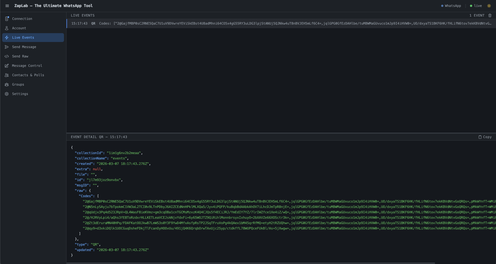

Study the protocol, automate workflows, and build rich integrations. A high-performance Go engine with embedded PocketBase for persistence, dynamic webhooks, and a powerful real-time dashboard.

Persistent in-app alerts for bot @mentions, Activity Tracker state changes, and webhook failures. Real-time via SSE with topbar badge.
One-click topbar toggle sends PresenceUnavailable to WhatsApp. Persisted and re-applied on every reconnect.
Topbar toggle stops grey-tick delivery receipts from being sent. Powered by a custom whatsmeow fork hook.
SSE stream now uses a dedicated REST endpoint for initial history load; Alpine.js reactivity bug fixed; reconnect + reload UI added.
Priority-ordered rules with condition chains (text pattern, sender, chat, hour window) and reply/webhook/script actions.
30 s timeout on WhatsApp ACK prevents indefinite hangs; loading guard in finally block prevents stuck button.
Queue messages for future delivery. Minute-tick worker fires pending sends with full status lifecycle tracking.
7 composite indexes, chat+sender expression indexes, 64 MB cache. Group/ranking queries up to 10× faster.
ZapLab combines the speed of Go with the simplicity of PocketBase to provide a robust environment for WhatsApp exploration.
Every message, receipt, and event is persisted in a local SQLite database powered by PocketBase. No external DB setup required.
Control WhatsApp via simple HTTP calls. Send text, media, polls, reactions, and manage groups with a single binary.
Monitor your instance with a real-time Dashboard. Visualize stats, inspect events, and browse message history with diffs.
From intelligent routing to full bot logic — ZapLab gives you the building blocks to automate any WhatsApp workflow without writing a custom service.
Priority-ordered rules with condition chains (text pattern, sender, hour window) and reply / webhook / script actions. No code required.
Route by event type or text pattern. Every outgoing request is HMAC-SHA256 signed and retried with exponential backoff. Full delivery log included.
Write and run scripts with full WhatsApp API access: send messages, query the DB, call external HTTP endpoints, and trigger on any event.
Queue messages for any future time. Minute-tick worker dispatches pending sends automatically — integrates with n8n and other tools.
The primary tool for researchers. Send any arbitrary waE2E.Message JSON directly to the protocol layer. Explore hidden message types and experimental features.
Impersonate different device types (Android, iOS, Companion) during the WebSocket handshake to study how the protocol behaves across platforms.